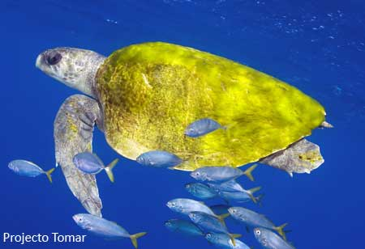
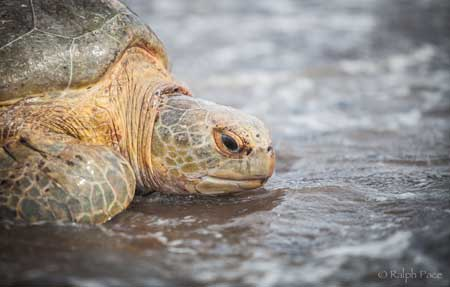
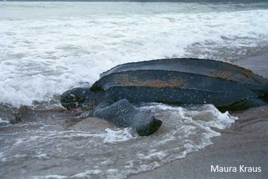

Information About Sea Turtles: Species of the World
Scientists recognize seven living species of sea turtles, which are grouped into six genera. Each sea turtle has both a scientific name and a common name. The scientific name
identifies the genus and species, and the common name typically describes some characteristic of the turtle’s body.
Different species of sea turtles like to eat different kinds of food. Sea turtles have mouths and jaws that are specially formed to help them eat the foods they like. And each species of sea
turtle eats, sleeps, mates and swims in distinctly different areas. Sometimes their habitats overlap, but for the most part they each have different preferences
Most common species in SriLanka

- Olive ridley (Lepidochelys olivacea)
The western North Atlantic (Surinam and adjacent areas) nesting population has declined more than 80 percent since 1967. Declines are also documented for Playa Nancite, Costa Rica, however other nesting
populations along the Pacific coast of Mexico and Costa Rica appear stable or increasing. In the Indian Ocean, Gahirmatha located in the Bhitarkanika Wildlife Sanctuary, India, supports perhaps the
largest nesting population with an average of 398,000 femalesnesting in a given year. This population continues to be threatened by nearshore trawl fisheries. It is very oceanic in the Eastern Pacific and
probably elsewhere too. Large arribadas of olive ridleys still occur in Pacific Costa Rica, primarily at Nancite and Ostional and Pacific Mexico at La Escobilla, Oaxaca.

- Green turtle (Chelonia mydas)
Green turtles are an endangered species around the world, but they still nest in increasing numbers on the east coast of Florida. The green sea turtle was listed in the United States under the
Endangered Species Act as endangered in 1978. The largest nesting site in the Western Hemisphere is at Tortuguero, Costa Rica, where STC has been running a research program since 1959. While the nesting
population may be stable in Suriname, and increasing in Tortuguero, there is insufficient information from other nesting sites to determine a species trend worldwide.

- Leatherback (Dermochelys coriacea)
The leatherback is the champion of sea turtles: It grows the largest, dives the deepest, and travels the farthest of all sea turtles. The leatherback was listed in the United States under the Endangered
Species Act as endangered in 1970. Populations have declined in Mexico, Costa Rica, Malaysia, India, Sri Lanka, Thailand, Trinidad, Tobago, and Papua New Guniea. Leatherbacks are seriously declining at all
major nesting beaches throughout the Pacific. The decline is dramatic along the Pacific coasts of Mexico and Costa Rica and coastal Malaysia. Nesting along the Pacific coast of Mexico declined at an annual
rate of 22% over the last 12 years, and the Malaysian population represents 1% of the levels recorded in the 1950s. In contrast, there has been a recent increase in leatherback nesting on the central and south
eastern coast of Florida.